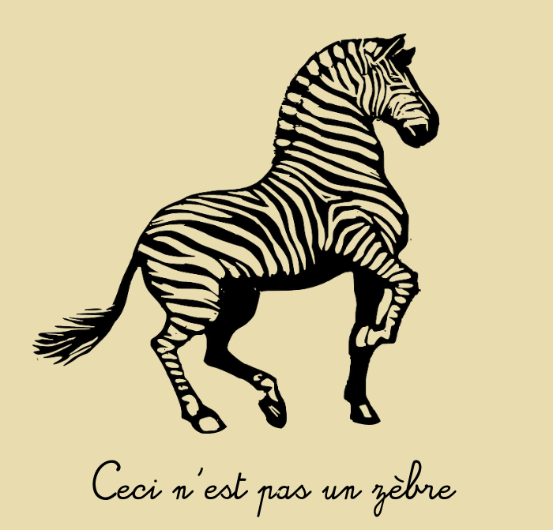

Nicolas Beuve
feb. 18 2021
Zoom
Image-to-image translation is a realm aiming at transposing images from one representation to another, like generating an aerial map of a region based on a photograph. Results in this field were greatly improved since the arrival of GAN models in 2014. GANs (Generative Adversarial Nets) are neural networks, specialized in sample generation. When applied to an image, those models are able to generate convincing samples that are similar to images from a reference dataset while remaining completely original.
Mehdi Mirza and Simon Osindero. 2014. Conditional Generative Adversarial Nets.